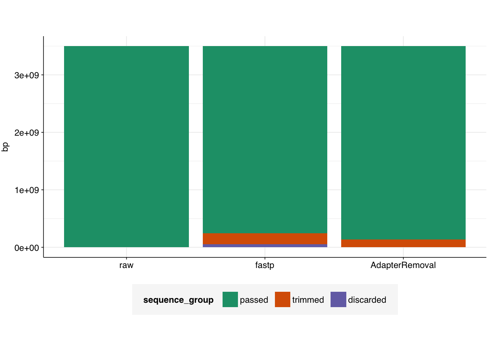

The first major step in our current MGS pipeline uses AdapterRemoval to automatically identify and remove sequencing adapters, as well as trimming low-quality bases and collapsing overlapping read pairs (it can also discard low-quality reads entirely, but our current pipeline doesn’t use this). An alternative tool, that can do all of this as well as read deduplication, is fastp. I asked the pipeline’s current primary maintainer if there was a good reason we were using one tool instead of the other, and he said that there wasn’t. So I decided to do a shallow investigation of their relative behavior on some example MGS datasets to see how they compare.
The data
To carry out this test, I selected three pairs of raw Illumina FASTQC files, corresponding to one sample each from two different published studies as well as one dataset provided to us by Marc Johnson:
For each sample, I generated FASTQC report files for the raw data, then ran FASTP and AdapterRemoval independently on the FASTQ files and tabulated the results
The commands
For processing with FASTP, I ran the following command:
I then ran the following command to actually carry out pre-processing, using the adapter sequences identified in the previous step (NB the minlength and maxns values are chosen to match the FASTP defaults):
This sample from Rothman et al. contains 11.58M read pairs in the raw FASTQ files.
FASTP:
Running FASTP took a total of 39 seconds.
FASTP detected and trimmed adapters on 3.88M reads (note: not read pairs).
A total of 133 Mb of sequence was trimmed due to adapter trimming, and 55 Mb due to other trimming processes, for a total of 188 Mb of trimmed sequence.
A total of 367,938 read pairs were discarded due to failing various filters, leaving 11.21M read pairs remaining.
AdapterRemoval:
Running AdapterRemoval took a total of 323.9 seconds (a bit under 5.5 minutes).
AdapterRemoval detected and trimmed adapters on 3.96M reads (note: again, not read pairs).
A total of 135 Mb of sequence was trimmed across all reads; the information isn’t provided to distinguish trimmed adapter sequences vs other trimming.
Only 2,347 read pairs were discarded due to failing various filters, leaving the final read number almost unchanged.
# Visualizetab_rothman_gathered<-gather(tab_rothman, key =sequence_group, value =bp, -status)|>mutate(sequence_group =sub("bp_", "", sequence_group), sequence_group =factor(sequence_group, levels =c("passed", "trimmed", "discarded")), status =factor(status, levels =c("raw", "fastp", "AdapterRemoval")))g_rothman<-ggplot(tab_rothman_gathered, aes(x=status, y=bp, fill =sequence_group))+geom_col(position ="stack")+scale_fill_brewer(palette ="Dark2")+theme_base+theme(axis.title.x =element_blank())g_rothman

FASTQC results:
Prior to adapter removal with either tool, the sequencing reads appear good quality, with a consistent average quality score of 30 across all bases in the forward read and ~29 in the reverse read. FASTP successfully raises the average quality score in the reverse read to 30 through trimming and read filtering, while AdapterRemoval leaves it unchanged.
FASTQC judges the data to have iffy sequence composition (%A/C/G/T); neither tool affects this much.
All reads in the raw data are 151bp long; unsurprisingly, trimming by both tools results in a left tail in the sequencing length distribution that was absent in the raw data.
As previously observed, the raw data has very high duplicate levels, with only ~26% of sequences estimated by FASTQC to remain after deduplication. Increasing the comparison window to 100bp (from a default of 50bp) increases this to ~35%. Neither tool has much effect on this number – unsurprisingly, since neither carried out deduplication.
Finally, adapter removal. Unsurprisingly, the raw data shows substantial adapter content. AdapterRemoval does a good job of removing adapters, resulting in a “pass” grade from FASTQC. Surprisingly, despite trimming adapters from fewer reads, fastp does even better (according to FASTQC) at removing adapters.
The images below show raw, fastp, and AR adapter content:
2. Crits-Christoph et al. (SRR23998357)
This sample from Rothman et al. contains 48.46M read pairs in the raw FASTQ files.
FASTP:
Running FASTP took a total of 99 seconds.
FASTP detected and trimmed adapters on 13.41M reads (note: not read pairs).
A total of 270 Mb of sequence was trimmed due to adapter trimming, and 43 Mb due to other trimming processes, for a total of 313 Mb of trimmed sequence.
A total of 1.99M read pairs were discarded due to failing various filters, leaving 47.47M read pairs remaining.
AdapterRemoval:
Running AdapterRemoval took a total of 1041.3 seconds (a bit over 17 minutes).
AdapterRemoval detected and trimmed adapters on 8.22M reads (note: again, not read pairs).
A total of 93.7 Mb of sequence was trimmed across all reads; the information isn’t provided to distinguish trimmed adapter sequences vs other trimming.
Only 32,381 read pairs were discarded due to failing various filters, leaving the final read number (again) almost unchanged.
# Visualizetab_cc_gathered<-gather(tab_cc, key =sequence_group, value =bp, -status)|>mutate(sequence_group =sub("bp_", "", sequence_group), sequence_group =factor(sequence_group, levels =c("passed", "trimmed", "discarded")), status =factor(status, levels =c("raw", "fastp", "AdapterRemoval")))g_cc<-ggplot(tab_cc_gathered, aes(x=status, y=bp, fill =sequence_group))+geom_col(position ="stack")+scale_fill_brewer(palette ="Dark2")+theme_base+theme(axis.title.x =element_blank())g_cc
FASTQC results:
As with Rothman, the raw data shows good sequence quality (though with some tailing off at later read positions), poor sequence composition, uniform read length (76bp in this case) and high numbers of duplicates. They also, unsurprisingly, have high adaptor content.
As with Rothman, fastp successfully improves read quality scores, while AdapterRemoval has little effect. Also as with Rothman, neither tool (as configured) has much effect on sequence composition or duplicates.
In this case, fastp is highly effective at removing adapter sequences, while AdapterRemoval is only weakly effective. I wonder if I misconfigured AR somehow, because I’m surprised at how many adapter sequences remain in this case. The images below show raw, fastp, and AR adapter content:
3. Johnson (COMO4)
This sample from Johnson contains 15.58M read pairs in the raw FASTQ files.
FASTP:
Running FASTP took a total of 33 seconds.
FASTP detected and trimmed adapters on 158,114 reads (note: not read pairs).
A total of 1.3 Mb of sequence was trimmed due to adapter trimming, and 14.6 Mb due to other trimming processes, for a total of 15.9 Mb of trimmed sequence.
A total of 0.33M read pairs were discarded due to failing various filters, leaving 15.25M read pairs remaining.
AdapterRemoval:
Running AdapterRemoval took a total of 311.4 seconds (a bit over 5 minutes).
AdapterRemoval detected and trimmed adapters on 155,360 reads (note: again, not read pairs).
A total of 93.7 Mb of sequence was trimmed across all reads; the information isn’t provided to distinguish trimmed adapter sequences vs other trimming.
Only 5,512 read pairs were discarded due to failing various filters, leaving the final read number (again) almost unchanged.
FASTQC results:
As with previous samples, the raw data shows good sequence quality (though with some tailing off at later read positions), poor sequence composition, uniform read length (76bp again) and high numbers of duplicates.
Unlike previous samples, the raw data for this sample shows very low adapter content – plausibly they underwent adapter trimming before they were sent to us?
Neither tool achieves much visible improvement on adapter content – unsurprisingly, given the very low levels in the raw data.
# Visualizetab_como_gathered<-gather(tab_como, key =sequence_group, value =bp, -status)|>mutate(sequence_group =sub("bp_", "", sequence_group), sequence_group =factor(sequence_group, levels =c("passed", "trimmed", "discarded")), status =factor(status, levels =c("raw", "fastp", "AdapterRemoval")))g_cc<-ggplot(tab_como_gathered, aes(x=status, y=bp, fill =sequence_group))+geom_col(position ="stack")+scale_fill_brewer(palette ="Dark2")+theme_base+theme(axis.title.x =element_blank())g_cc
Deduplication with fastp
Given that all three of these samples contain high levels of sequence duplicates, I was curious to see to what degree fastp was able to improve on this metric. To test this, I reran fastp on all three samples, with the --dedup option enabled. I observed the following:
Runtimes were consistently very slightly longer than without deduplication.
The number of successful output reads declined from 11.21M to 9.29M for the Rothman sample, from 47.47M to 31.47M, and from 15.25M to 11.03M for the Johnson sample.
Relative to the raw data, and using the default FASTQC settings, the predicted fraction of reads surviving deduplication rose from 26% to 29% for the Rothman sample, from 45% to 64% for the Crits-Cristoph sample, and from 26% to 32% for the Johnson sample, following fastp deduplication. That is to say, by this metric, deduplication was mildly but not very effective.
This relative lack of efficacy may simply be because FASTP identifies duplicates as read pairs that are entirely identical in sequence, while FASTQC only looks at the first 50 base pairs of each read in isolation.
I think I need to learn more about read duplicates and deduplication before I have strong takeaways here.
Conclusions
Taken together, I think these data make a decent case for using FASTP, rather than AdapterRemoval, for pre-processing and adapter trimming.
FASTP is much faster than AdapterRemoval.
For those samples with high adapter content, FASTP appeared more effective than AdapterRemoval at removing adapters, at least for those adapter sequences that could be detected by FASTQC.
FASTP provides substantially more functionality than AdapterRemoval, making it easier for us to add additional preprocessing steps like read filtering and (some) deduplication down the line.
Source Code
---title: "Comparing FASTP and AdapterRemoval for MGS pre-processing"subtitle: "Two tools -- how do they perform?"author: "Will Bradshaw"date: 2023-10-21format: html: code-fold: true code-tools: true code-link: true df-print: pagededitor: visualtitle-block-banner: black---```{r}#| label: load-packages#| include: falselibrary(tidyverse)library(patchwork)library(ggrepel)source("../scripts/aux_plot-theme.R")```The first major step in our current MGS pipeline uses AdapterRemoval to automatically identify and remove sequencing adapters, as well as trimming low-quality bases and collapsing overlapping read pairs (it can also discard low-quality reads entirely, but our current pipeline doesn't use this). An alternative tool, that can do all of this as well as read deduplication, is fastp. I asked the pipeline's current primary maintainer if there was a good reason we were using one tool instead of the other, and he said that there wasn't. So I decided to do a shallow investigation of their relative behavior on some example MGS datasets to see how they compare.# The dataTo carry out this test, I selected three pairs of raw Illumina FASTQC files, corresponding to one sample each from two different published studies as well as one dataset provided to us by Marc Johnson:| Study | Bioproject | Sample ||------------------------------|-------------------------------------------------------------------|-------------|| Rothman et al. (2021) | [PRJNA729801](https://www.ebi.ac.uk/ena/browser/view/PRJNA729801) | SRR19607374 || Crits-Cristoph et al. (2021) | [PRJNA661613](https://www.ebi.ac.uk/ena/browser/view/PRJNA661613) | SRR23998357 || Johnson (2023) | N/A | COMO4 |For each sample, I generated FASTQC report files for the raw data, then ran FASTP and AdapterRemoval independently on the FASTQ files and tabulated the results# The commandsFor processing with FASTP, I ran the following command:``` fastp -i <raw-reads-1> -I <raw-reads-2> -o <output-path-1> -O <output-path-2> --failed_out <output-path-failed-reads> --cut_tail --correction```(I didn't run deduplication for this test, as AdapterRemoval doesn't have that functionality.)For processing with AdapterRemoval, I first ran the following command to identify adapters:``` AdapterRemoval --file1 <raw-reads-1> --file2 <raw-reads-2> --identify-adapters --threads 4 > adapter_report.txt```I then ran the following command to actually carry out pre-processing, using the adapter sequences identified in the previous step (NB the `minlength` and `maxns` values are chosen to match the FASTP defaults):``` AdapterRemoval --file1 <raw-reads-1> --file2 <raw-reads-2> --basename <output-prefix> --adapter1 <adapter1> --adapter2 <adapter2> --gzip --trimns --trimqualities --minlength 15 --maxns 5```# 1. Rothman et al. (SRR19607374)This sample from Rothman et al. contains **11.58M** read pairs in the raw FASTQ files.**FASTP:**- Running FASTP took a total of **39 seconds**.- FASTP detected and trimmed adapters on **3.88M reads** (note: *not* read pairs).- A total of 133 Mb of sequence was trimmed due to adapter trimming, and 55 Mb due to other trimming processes, for a total of **188 Mb of trimmed sequence**.- A total of **367,938 read pairs** were discarded due to failing various filters, leaving **11.21M read pairs** remaining.**AdapterRemoval:**- Running AdapterRemoval took a total of **323.9 seconds** (a bit under 5.5 minutes).- AdapterRemoval detected and trimmed adapters on **3.96M reads** (note: again, not read pairs).- A total of **135 Mb** of sequence was trimmed across all reads; the information isn't provided to distinguish trimmed adapter sequences vs other trimming.- Only 2,347 read pairs were discarded due to failing various filters, leaving the final read number almost unchanged.```{r}# Calculate read allocations for Rothmanstatus =c("raw", "fastp", "AdapterRemoval")bp_passed =c(1748896043+1748896043,1627794563+1627794563,1681118328+1681115431)bp_discarded =c(0,54014538,276107+271850)bp_trimmed =c(0,bp_passed[1]-bp_passed[2]-bp_discarded[2],bp_passed[1]-bp_passed[3]-bp_discarded[3])# Tabulatetab_rothman <-tibble(status = status, bp_passed = bp_passed, bp_discarded = bp_discarded, bp_trimmed = bp_trimmed)tab_rothman# Visualizetab_rothman_gathered <-gather(tab_rothman, key = sequence_group, value = bp, -status) |>mutate(sequence_group =sub("bp_", "", sequence_group),sequence_group =factor(sequence_group, levels =c("passed", "trimmed", "discarded")),status =factor(status, levels =c("raw", "fastp", "AdapterRemoval")))g_rothman <-ggplot(tab_rothman_gathered, aes(x=status, y=bp, fill = sequence_group)) +geom_col(position ="stack") +scale_fill_brewer(palette ="Dark2") + theme_base +theme(axis.title.x =element_blank())g_rothman```**FASTQC results:**- Prior to adapter removal with either tool, the sequencing reads appear good quality, with a consistent average quality score of 30 across all bases in the forward read and \~29 in the reverse read. FASTP successfully raises the average quality score in the reverse read to 30 through trimming and read filtering, while AdapterRemoval leaves it unchanged.- FASTQC judges the data to have iffy sequence composition (%A/C/G/T); neither tool affects this much.- All reads in the raw data are 151bp long; unsurprisingly, trimming by both tools results in a left tail in the sequencing length distribution that was absent in the raw data.- As previously observed, the raw data has very high duplicate levels, with only \~26% of sequences estimated by FASTQC to remain after deduplication. Increasing the comparison window to 100bp (from a default of 50bp) increases this to \~35%. Neither tool has much effect on this number -- unsurprisingly, since neither carried out deduplication.- Finally, adapter removal. Unsurprisingly, the raw data shows substantial adapter content. AdapterRemoval does a good job of removing adapters, resulting in a "pass" grade from FASTQC. Surprisingly, despite trimming adapters from fewer reads, fastp does even better (according to FASTQC) at removing adapters.- The images below show raw, fastp, and AR adapter content: -  -  - # 2. Crits-Christoph et al. (SRR23998357)This sample from Rothman et al. contains **48.46M** read pairs in the raw FASTQ files.**FASTP:**- Running FASTP took a total of **99 seconds**.- FASTP detected and trimmed adapters on **13.41M reads** (note: *not* read pairs).- A total of 270 Mb of sequence was trimmed due to adapter trimming, and 43 Mb due to other trimming processes, for a total of **313 Mb of trimmed sequence**.- A total of **1.99M read pairs** were discarded due to failing various filters, leaving **47.47M read pairs** remaining.**AdapterRemoval:**- Running AdapterRemoval took a total of **1041.3 seconds** (a bit over 17 minutes).- AdapterRemoval detected and trimmed adapters on **8.22M reads** (note: again, not read pairs).- A total of **93.7 Mb** of sequence was trimmed across all reads; the information isn't provided to distinguish trimmed adapter sequences vs other trimming.- Only **32,381** read pairs were discarded due to failing various filters, leaving the final read number (again) almost unchanged.```{r}# Calculate read allocations for CritsCristophstatus =c("raw", "fastp", "AdapterRemoval")bp_passed_cc =c(3683175308+3683175308,3465517525+3467624847,3634186441+3634143668)bp_discarded_cc =c(0,120701257,2057612+2224529)bp_trimmed_cc =c(0,bp_passed_cc[1]-bp_passed_cc[2]-bp_discarded_cc[2],bp_passed_cc[1]-bp_passed_cc[3]-bp_discarded_cc[3])# Tabulatetab_cc <-tibble(status = status, bp_passed = bp_passed_cc, bp_discarded = bp_discarded_cc, bp_trimmed = bp_trimmed_cc)tab_cc# Visualizetab_cc_gathered <-gather(tab_cc, key = sequence_group, value = bp, -status) |>mutate(sequence_group =sub("bp_", "", sequence_group),sequence_group =factor(sequence_group, levels =c("passed", "trimmed", "discarded")),status =factor(status, levels =c("raw", "fastp", "AdapterRemoval")))g_cc <-ggplot(tab_cc_gathered, aes(x=status, y=bp, fill = sequence_group)) +geom_col(position ="stack") +scale_fill_brewer(palette ="Dark2") + theme_base +theme(axis.title.x =element_blank())g_cc```**FASTQC results:**- As with Rothman, the raw data shows good sequence quality (though with some tailing off at later read positions), poor sequence composition, uniform read length (76bp in this case) and high numbers of duplicates. They also, unsurprisingly, have high adaptor content.- As with Rothman, fastp successfully improves read quality scores, while AdapterRemoval has little effect. Also as with Rothman, neither tool (as configured) has much effect on sequence composition or duplicates.- In this case, fastp is highly effective at removing adapter sequences, while AdapterRemoval is only weakly effective. I wonder if I misconfigured AR somehow, because I'm surprised at how many adapter sequences remain in this case. The images below show raw, fastp, and AR adapter content: -  -  - # 3. Johnson (COMO4)This sample from Johnson contains **15.58M** read pairs in the raw FASTQ files.**FASTP:**- Running FASTP took a total of **33 seconds**.- FASTP detected and trimmed adapters on **158,114 reads** (note: *not* read pairs).- A total of 1.3 Mb of sequence was trimmed due to adapter trimming, and 14.6 Mb due to other trimming processes, for a total of **15.9 Mb of trimmed sequence**.- A total of **0.33M read pairs** were discarded due to failing various filters, leaving **15.25M read pairs** remaining.**AdapterRemoval:**- Running AdapterRemoval took a total of **311.4 seconds** (a bit over 5 minutes).- AdapterRemoval detected and trimmed adapters on **155,360 reads** (note: again, not read pairs).- A total of **93.7 Mb** of sequence was trimmed across all reads; the information isn't provided to distinguish trimmed adapter sequences vs other trimming.- Only **5,512** read pairs were discarded due to failing various filters, leaving the final read number (again) almost unchanged.**FASTQC results:**- As with previous samples, the raw data shows good sequence quality (though with some tailing off at later read positions), poor sequence composition, uniform read length (76bp again) and high numbers of duplicates.- Unlike previous samples, the raw data for this sample shows very low adapter content -- plausibly they underwent adapter trimming before they were sent to us?- Neither tool achieves much visible improvement on adapter content -- unsurprisingly, given the very low levels in the raw data.```{r}# Calculate read allocations for Johnsonstatus =c("raw", "fastp", "AdapterRemoval")bp_passed_como =c(1183987584+1183987584,1157539804+1157540364,1182999562+1182970312)bp_discarded_como =c(0,36950446,418230+257734)bp_trimmed_como =c(0,bp_passed_como[1]-bp_passed_como[2]-bp_discarded_como[2],bp_passed_como[1]-bp_passed_como[3]-bp_discarded_como[3])# Tabulatetab_como <-tibble(status = status, bp_passed = bp_passed_como, bp_discarded = bp_discarded_como, bp_trimmed = bp_trimmed_como)tab_como# Visualizetab_como_gathered <-gather(tab_como, key = sequence_group, value = bp, -status) |>mutate(sequence_group =sub("bp_", "", sequence_group),sequence_group =factor(sequence_group, levels =c("passed", "trimmed", "discarded")),status =factor(status, levels =c("raw", "fastp", "AdapterRemoval")))g_cc <-ggplot(tab_como_gathered, aes(x=status, y=bp, fill = sequence_group)) +geom_col(position ="stack") +scale_fill_brewer(palette ="Dark2") + theme_base +theme(axis.title.x =element_blank())g_cc```# Deduplication with fastpGiven that all three of these samples contain high levels of sequence duplicates, I was curious to see to what degree fastp was able to improve on this metric. To test this, I reran fastp on all three samples, with the `--dedup` option enabled. I observed the following:- Runtimes were consistently very slightly longer than without deduplication.- The number of successful output reads declined from 11.21M to 9.29M for the Rothman sample, from 47.47M to 31.47M, and from 15.25M to 11.03M for the Johnson sample.- Relative to the raw data, and using the default FASTQC settings, the predicted fraction of reads surviving deduplication rose from 26% to 29% for the Rothman sample, from 45% to 64% for the Crits-Cristoph sample, and from 26% to 32% for the Johnson sample, following fastp deduplication. That is to say, by this metric, deduplication was mildly but not very effective.- This relative lack of efficacy may simply be because FASTP identifies duplicates as read pairs that are entirely identical in sequence, while FASTQC only looks at the first 50 base pairs of each read in isolation.- I think I need to learn more about read duplicates and deduplication before I have strong takeaways here.# ConclusionsTaken together, I think these data make a decent case for using FASTP, rather than AdapterRemoval, for pre-processing and adapter trimming.- FASTP is much faster than AdapterRemoval.- For those samples with high adapter content, FASTP appeared more effective than AdapterRemoval at removing adapters, at least for those adapter sequences that could be detected by FASTQC.- FASTP provides substantially more functionality than AdapterRemoval, making it easier for us to add additional preprocessing steps like read filtering and (some) deduplication down the line.